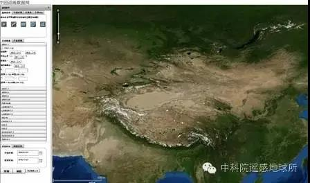
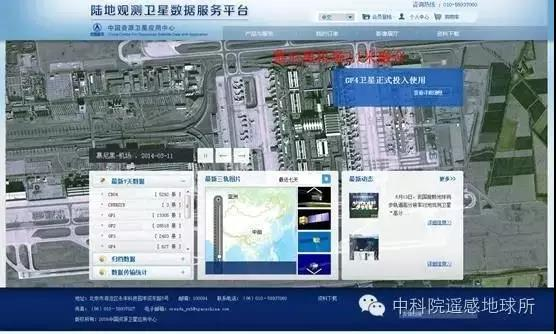
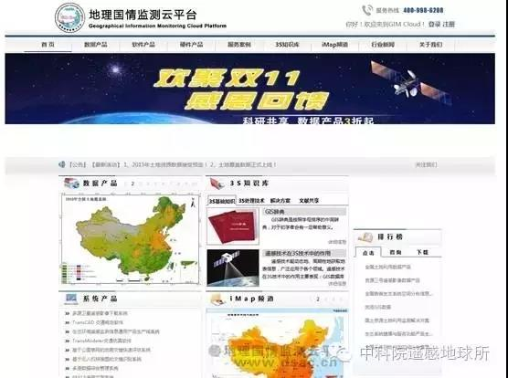
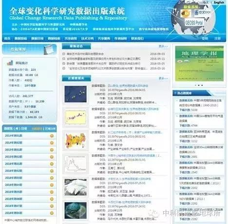

Remote Sensing
您现在的位置是：网站首页>>【资料下载】【资料下载】国内卫星遥感数据下载地址
国内卫星遥感数据下载地址
发布时间：2018-07-01 22:26:32来源：中国科学院遥感与数字地球研究所微信公众号点击：1056
从农业、环保、气象到国土行业等等，遥感数据的应用领域不断纵深，与我们的生活也越来越息息相关，从事和喜爱遥感行业的人也越来越多了。然而，目前许多遥感卫星数据依然十分昂贵，各大政府职能部门和企业有资金实力购买使用。但是对于用来学习使用的许多学生和个人却很难购买得起遥感数据。本文收集整理了一些国内常用的卫星数据下载地址，既有免费数据，也有收费数据，随意取用！
| 名 称 | 图 | 下载地址 | 数据介绍 |
|---|---|---|---|
| 中国遥感数据共享网 |  | http://eds.ceode.ac.cn/sjglb/dataservice.html | 这是国内存档周期最长的数据网站，对LANDSAT系列接收数据进行免费共享，还可以订购国外商业卫星数据。对地观测数据共享计划可以下载中国和中亚区域时序定量遥感产品和镶嵌图。(账号注册，通过审核直接下载。) |
| 中国资源卫星中心 |  | http://218.247.138.121/DSSPlatform/index.html | 汇聚国产卫星数据，自由注册可以下载HJ卫星数据，高分数据下载需要提交审批。 |
| 地理空间数据云 | http://www.gscloud.cn | 这里也可以下载国内LANDSAT数据，它的数据是从美国USGS同步过来的，其中MODIS产品、DEM数据等也是下载比较多的，数据资源更新比较稳定，还有众包服务。(账号注册，通过审核直接下载)。 | |
| 地理国情监测云平台 |  | http://www.dsac.cn | 这里的国家数据种类较多，资源丰富，影响力较大。网站会经常做活动，赠送部分数据，但多数数据都是收费的，费用较为合理。 |
| 全球变化科学研究数据出版系统 |  | http://www.geodoi.ac.cn/WebCn/Default.aspx | 这里可下载科研用途数据，数据种类较丰富，涉及领域很多，根据自己需要查找，会有一定惊喜。(账号注册，通过审核直接下载)。 |
| 遥感集市 | http://www.rscloudmart.com | 属于中科遥感集团，国产和国外数据都有，其中PLANET数据可以购买，下载需要付费，部分免费数据，可以关注优惠活动 |